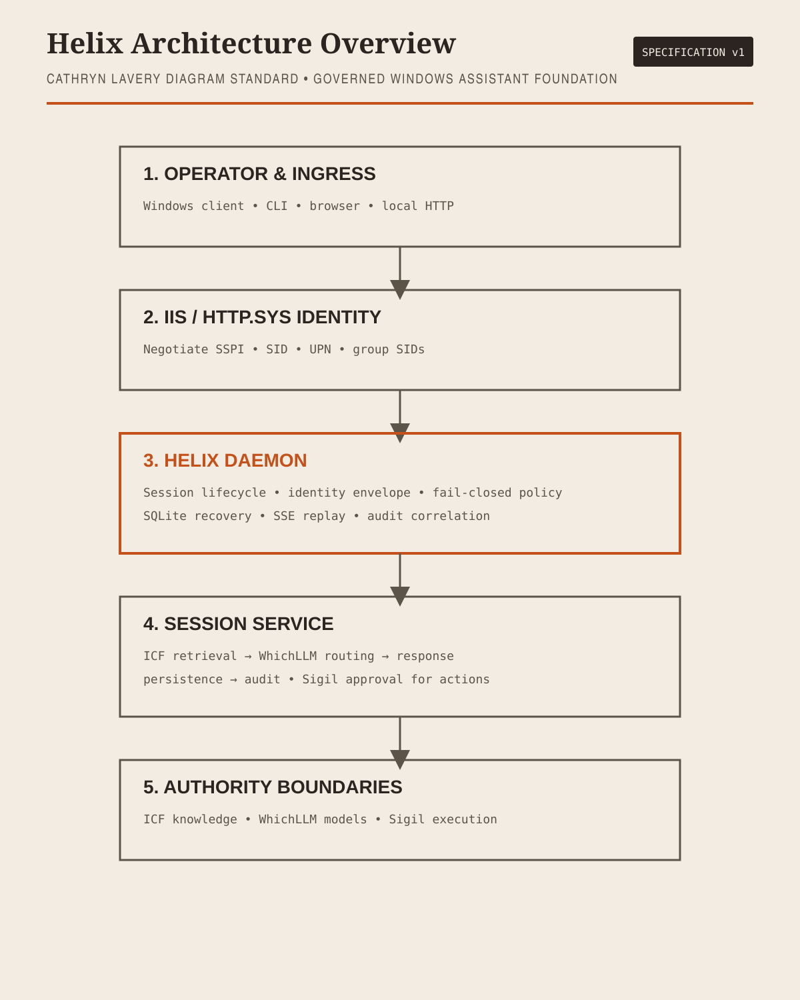

graph TD A[Operator and ingress] --> B[IIS HTTP.sys identity] B --> C[Helix daemon] C --> D[SessionService] D --> E[ICF retrieval] D --> F[WhichLLM routing] D --> G[Response persistence audit] D --> H[Sigil approval and execution]